All in One View
Content from Read case data
Last updated on 2026-07-02 | Edit this page
Estimated time: 30 minutes
Overview
Questions
- Where do you usually store outbreak data?
- What data formats do you commonly use for analysis?
- Can you import data directly from servers and health information systems?
Objectives
- Identify common sources of outbreak data.
- Import outbreak data from multiple formats into
Renvironment. - Access and retrieve data from remote servers and health information systems using APIs.
Prerequisites
This episode requires you to be familiar with Data science: Basic tasks with R.
Introduction
The first step in outbreak analysis is importing your dataset into
the R environment. Data can come from local sources, like
files on your computer, or external sources, like databases and health
information systems (HIS).
Outbreak data takes many forms. It may be sorted as a flat file in various formats, housed in relational database management systems (RDBMS), or managed through specialized HIS like SORMAS and DHIS2. These HISs offer application programming interfaces (APIs) that allow authorized users to modify and retrieve data entries efficiently, making them particularly valuable for large-scale institutional health data collection and storage.
This episode demonstrates how to read case data from each of these
sources. Let’s begin by loading the packages we’ll need. We will use
rio to read data stored in files and
readepi to access data from RDBMS and HIS. We will also
load here to locate file paths within your project
directory, and tidyverse, which includes
magrittr (providing the pipe operator
%>%) and dplyr (for data manipulation).
The pipe operator allows us to chain functions together seamlessly.
R
# Load packages
library(tidyverse) # for {dplyr} functions and the pipe %>%
library(rio) # for importing data from files
library(here) # for easy file referencing
library(readepi) # for importing data directly from RDBMS or HIS
library(dbplyr) # for a database backend for {dplyr}
The double-colon (::)
operator
The double-colon :: in R lets you call a
specific function from a package without loading the entire package. For
example, dplyr::filter(data, condition) uses the
filter() function from the dplyr package,
without requiring library(dplyr).
This notation serves two purposes: it makes code more readable by explicitly showing which package each function comes from, and it prevents namespace conflicts that occur when multiple packages contain functions with the same name.
Setup a project and folder
- Create an RStudio project. If needed, follow this how-to guide on “Hello RStudio Projects” to create one.
- Inside the RStudio project, create a
data/folder. - Download ebola_cases_2.csv
and marburg.zip
CSV files, and save them inside the
data/folder.
Reading from files
Several packages are available for importing outbreak data stored in
individual files into R. These include {rio}, {readr} from the
tidyverse, {io}, {ImportExport},
and {data.table}.
Together, these packages offer methods to read single or multiple files
in a wide range of formats.
The below example shows how to import a csv file into
R environment using the rio package. We use
the here package to tell R to look for the file in the
data/ folder of your project, and
dplyr::as_tibble() to convert into a tidier format for
subsequent analysis in R.
R
# read data
# e.g., if the path to our file is "data/raw-data/ebola_cases_2.csv" then:
ebola_confirmed <- rio::import(
here::here("data", "raw-data", "ebola_cases_2.csv")
) %>%
dplyr::as_tibble() # for a simple data frame output
# preview data
ebola_confirmed
OUTPUT
# A tibble: 120 × 4
year month day confirm
<int> <int> <int> <int>
1 2014 5 18 1
2 2014 5 20 2
3 2014 5 21 4
4 2014 5 22 6
5 2014 5 23 1
6 2014 5 24 2
7 2014 5 26 10
8 2014 5 27 8
9 2014 5 28 2
10 2014 5 29 12
# ℹ 110 more rowsYou can use the same approach to import other file formats such as
tsv, xlsx, and more.
Why should we use the {here} package?
The here package is designed to simplify file referencing in R projects by providing a reliable way to construct file paths relative to the project root. The main reason to use is for cross-environment compatibility.
It works across different operating systems (Windows, Mac, Linux) without needing to adjust file paths.
- On Windows, paths are written using backslashes (
\) as the separator between folder names:"data\raw-data\file.csv". - On Unix based operating systems such as macOS or Linux the forward
slash (
/) is used as the path separator:"data/raw-data/file.csv".
The here package reinforces the reproducibility of your work across multiple operating systems. If you are interested in reproducibility, we invite you to read this tutorial to increase the openess, sustainability, and reproducibility of your epidemic analysis with R
Reading compressed data
Can you read data from a compressed file in R?
Download this zip
file containing Marburg outbreak data and then import it to your
R environment.
You can check the full list of supported file formats in the rio package on the package website. To see the list of supported formats in rio, run:
R
rio::install_formats()
R
rio::import(here::here("data", "Marburg.zip"))
Reading from databases
The readepi library contains functions that allow you
to import data directly from RDBMS. The
readepi::read_rdbms() function supports importing data from
servers such as Microsoft SQL, MySQL, PostgreSQL, and SQLite. It build
on the {DBI} package, which
provides a general interface for interacting RDBMS.
Advantages of reading data directly from a database?
Importing data directly from a database optimizes the memory usage in the R session. By processing the database with “queries” (e.g., SELECT, FILTER, GROUP BY) before extraction, you reduce the memory load in our RStudio session. In contrast, loading an entire dataset into R for manipulation can consume more RAM than your local machine can handle, potentially causing RStudio to slow down or freeze.
RDBMS also enable multiple users to access, store, and analyze parts of the dataset simultaneously without transferring individual files. This eliminates the version control problems that arise when multiple file copies circulate among users.
1. Connect with a database
You can use the readepi::login() function to establish a
connection to the database, as shown below:
R
# establish the connection to a test MySQL database
rdbms_login <- readepi::login(
from = "mysql-rfam-public.ebi.ac.uk",
type = "MySQL",
user_name = "rfamro",
password = "",
driver_name = "",
db_name = "Rfam",
port = 4497
)
OUTPUT
✔ Logged in successfully!R
rdbms_login
OUTPUT
<Pool> of MySQLConnection objects
Objects checked out: 0
Available in pool: 1
Max size: Inf
Valid: TRUEThe function parameters are:
-
from: The database server address (mysql-rfam-public.ebi.ac.uk) -
type: The type of database system (“MySQL”) -
user_name: The username for authentication (“rfamro”) -
password: The password (empty string “” indicates no password required for this public test database) -
driver_name: The database driver (empty string uses the default driver) -
db_name: The specific database to connect to (“Rfam”) -
port: The port number for the connection (4497)
The function returns a connection object stored in variable
rdbms_login, which can then be used to query and retrieve
data from the database.
Note: This example uses a public test database from the European Bioinformatics Institute, which is why no password is required. Access to it may be limited by organizational network restrictions, but it should work normally on home networks.
2. Access the list of tables from the database
The readepi::show_tables() function retrieves the full
list of table names from a database:
R
# get the table names
tables <- readepi::show_tables(login = rdbms_login)
tables[1:5]
OUTPUT
[1] "_annotated_file" "_family_file" "_genome_data" "_lock"
[5] "_overlap" In a relational database, you typically have multiple tables. Each table represents a specific entity (e.g., patients, care units, treatments). Tables are linked through common identifiers called primary keys or foreign keys.
3. Read data from a table in a database
You can read the data from the author table using
dplyr::tbl().
R
# import data from the 'author' table using an SQL query
dat <- rdbms_login %>%
dplyr::tbl(from = "author") %>%
dplyr::filter(initials == "A") %>%
dplyr::arrange(desc(author_id))
dat
OUTPUT
# Source: SQL [?? x 6]
# Database: mysql 8.0.32-24 [@mysql-rfam-public.ebi.ac.uk:/Rfam]
# Ordered by: desc(author_id)
author_id name last_name initials orcid synonyms
<int> <chr> <chr> <chr> <chr> <chr>
1 46 Roth A Roth A "" ""
2 42 Nahvi A Nahvi A "" ""
3 32 Machado Lima A Machado Lima A "" ""
4 31 Levy A Levy A "" ""
5 27 Gruber A Gruber A "0000-0003-1219-4239" ""
6 13 Chen A Chen A "" ""
7 6 Bateman A Bateman A "0000-0002-6982-4660" "" When you apply dplyr verbs to this database table, they are automatically translated into SQL queries:
R
# Show the SQL queries translated
dat %>%
dplyr::show_query()
OUTPUT
<SQL>
SELECT `author`.*
FROM `author`
WHERE (`initials` = 'A')
ORDER BY `author_id` DESCAlternatively, you can use the readepi::read_rdbms()
function to import data from a database table. It accepts either an SQL
query or a list of query parameters.
4. Extract data from the database
Use dplyr::collect() to force computation of a database
query and extract the output to your local computer.
R
# Pull all data down to a local tibble
dat %>%
dplyr::collect()
OUTPUT
# A tibble: 7 × 6
author_id name last_name initials orcid synonyms
<int> <chr> <chr> <chr> <chr> <chr>
1 46 Roth A Roth A "" ""
2 42 Nahvi A Nahvi A "" ""
3 32 Machado Lima A Machado Lima A "" ""
4 31 Levy A Levy A "" ""
5 27 Gruber A Gruber A "0000-0003-1219-4239" ""
6 13 Chen A Chen A "" ""
7 6 Bateman A Bateman A "0000-0002-6982-4660" "" Ideally, after specifying a set of queries, we can reduce the size of the input dataset to use in the environment of our R session.
Run SQL queries in R using {dbplyr}
Create one table containing:
- the column
namefrom tableauthor, - the column
rfam_accfrom tablefamily_author, and - using
author_idas primary key or common identifier.
Following these steps:
- Use dplyr verbs to select column and join tables,
- Print the relational database SQL queries, and
- Pull out data to your local session.
Join columns from two different tables:
- From the table
author, selectauthor_idandname. - From the table
family_author, selectauthor_idandrfam_acc. - Join to the table
authorthe tablefamily_authorusingdplyr::left_join(). - Print the SQL query using
dplyr::show_query() - collect the joined output using
dplyr::collect()
R
# SELECT FEW COLUMNS FROM ONE TABLE AND LEFT JOIN WITH ANOTHER TABLE
author <- rdbms_login %>%
dplyr::tbl(from = "author") %>%
dplyr::select(author_id, name)
family_author <- rdbms_login %>%
dplyr::tbl(from = "family_author") %>%
dplyr::select(author_id, rfam_acc)
dplyr::left_join(author, family_author, keep = TRUE) %>%
dplyr::show_query()
OUTPUT
Joining with `by = join_by(author_id)`OUTPUT
<SQL>
SELECT
`author`.`author_id` AS `author_id.x`,
`name`,
`family_author`.`author_id` AS `author_id.y`,
`rfam_acc`
FROM `author`
LEFT JOIN `family_author`
ON (`author`.`author_id` = `family_author`.`author_id`)R
dplyr::left_join(author, family_author, keep = TRUE) %>%
dplyr::collect()
OUTPUT
Joining with `by = join_by(author_id)`OUTPUT
# A tibble: 5,029 × 4
author_id.x name author_id.y rfam_acc
<int> <chr> <int> <chr>
1 1 Ames T 1 RF01831
2 2 Argasinska J 2 RF02554
3 2 Argasinska J 2 RF02555
4 2 Argasinska J 2 RF02722
5 2 Argasinska J 2 RF02720
6 2 Argasinska J 2 RF02719
7 2 Argasinska J 2 RF02721
8 2 Argasinska J 2 RF02670
9 2 Argasinska J 2 RF02718
10 2 Argasinska J 2 RF02668
# ℹ 5,019 more rowsYou can also review the dbplyr R package. But for a step-by-step tutorial about SQL, we recommend you this tutorial about data management with SQL for Ecologist.
We can close the connection to the database with:
R
pool::poolClose(rdbms_login)
You can confirm the connection closed running the created objects in console:
R
rdbms_login
OUTPUT
<Pool> of MySQLConnection objects
Objects checked out: 0
Available in pool: 0
Max size: Inf
Valid: FALSER
dat
ERROR
Error in `poolCheckout()`:
! The pool has been closed.Reading from HIS APIs
Health data is increasingly stored in specialized HIS such as Fingertips, GoData, REDCap, DHIS2, SORMAS, etc. The current version of the readepi library allows importing data from DHIS2 and SORMAS. The subsections below demonstrate how to import data from these two systems.
Importing data from DHIS2
DHIS2 (District Health
Information System 2) is an open-source software that has revolutionized
global health information management. The
readepi::read_dhis2() function imports data from the DHIS2
Tracker system via
its API.
To successfully import data from DHIS2, you need to:
- Connect to the system using the
readepi::login()function - Provide the name or ID of the target program and organization unit
You can retrieve the IDs and names of available programs and
organization units using the get_programs() and
get_organisation_units() functions, respectively.
R
# establish the connection to the system
dhis2_login <- readepi::login(
type = "dhis2",
from = "https://play.im.dhis2.org/stable-2-41-8-2",
user_name = "admin",
password = "district"
)
ERROR
Error in `httr2::req_perform()`:
! HTTP 404 Not Found.R
dhis2_login
OUTPUT
function (base_url, user_name, password)
{
target_url <- file.path(base_url, "api", "me")
resp <- httr2::req_perform(httr2::req_auth_basic(httr2::request(target_url),
user_name, password))
cli::cli_alert_success("Logged in successfully!")
return(invisible(resp))
}
<bytecode: 0x556c0f589728>
<environment: namespace:readepi>If the step above fails, check for others available in the list of DHIS2 Demo Instances,
all accessible with username "admin" and password
"district". Just replace stable-2-41-8-2 in
the URL string.
Avoid publishing your USER NAME and PASSWORD. You could use rstudioapi:
R
dhis2_login <- readepi::login(
type = "dhis2",
from = "https://play.im.dhis2.org/stable-2-41-8-2",
user_name = rstudioapi::askForPassword("Database username"),
password = rstudioapi::askForPassword("Database password")
)
Your can read further from this blogpost on How to Avoid Publishing Credentials in Your Code
R
# get the names and IDs of the programs
programs <- readepi::get_programs(login = dhis2_login)
ERROR
Error in `login[["url"]]`:
! object of type 'closure' is not subsettableR
# print tables
tibble::as_tibble(programs)
ERROR
Error:
! object 'programs' not foundR
# get the names and IDs of the organisation units
org_units <- readepi::get_organisation_units(login = dhis2_login)
ERROR
Error in `login[["url"]]`:
! object of type 'closure' is not subsettableR
# print tables
tibble::as_tibble(org_units)
ERROR
Error:
! object 'org_units' not foundAfter retrieving organization units and program names from the DHIS2 database, we can import data using either names or coded IDs, as demonstrated in the code chunks below:
R
# import data from DHIS2 using names
data_name <- readepi::read_dhis2(
login = dhis2_login,
org_unit = "Bucksal Clinic",
program = "Child Programme"
)
ERROR
Error in `readepi::read_dhis2()`:
! Assertion on 'login' failed: Must inherit from class 'httr2_response', but has class 'function'.R
tibble::as_tibble(data_name)
ERROR
Error:
! object 'data_name' not foundR
# import data from DHIS2 using IDs
data_id <- readepi::read_dhis2(
login = dhis2_login,
org_unit = "vRC0stJ5y9Q",
program = "IpHINAT79UW"
)
ERROR
Error in `readepi::read_dhis2()`:
! Assertion on 'login' failed: Must inherit from class 'httr2_response', but has class 'function'.R
identical(data_id, data_name)
ERROR
Error:
! object 'data_id' not foundNote that not all organization units are registered for a specific
program. To find which organization units are running a particular
program, use the get_program_org_units() function as shown
below:
R
# get the list of organisation units that run the program "IpHINAT79UW"
target_org_units <- readepi::get_program_org_units(
login = dhis2_login,
program = "IpHINAT79UW",
org_units = org_units
)
ERROR
Error in `login[["url"]]`:
! object of type 'closure' is not subsettableR
tibble::as_tibble(target_org_units)
ERROR
Error:
! object 'target_org_units' not foundReading from a DHIS2 sever
Test readepi by accessing to a DHIS2 server with your credentials.
Do the following:
- Log into a different server,
- List all available programs and organization units,
- Read data from one of these programs,
- Optional: Reproduce one descriptive figure.
Try using rstudioapi::askForPassword() for
user_name and password.
If you get errors, please fill an issue in the readepi
GitHub repository.
Importing data from SORMAS
The SORMAS (Surveillance Outbreak
Response Management and Analysis System) is an open-source e-health
system that optimizes infectious disease surveillance and outbreak
response processes. The readepi::read_sormas() function
allows you to import data from SORMAS via its API.
In the current version of the readepi package, the
read_sormas() function returns data for the following
columns: case_id, person_id, sex, date_of_birth, case_origin,
country, city, lat, long, case_status, date_onset, date_admission,
date_last_contact, date_first_contact, outcome, date_outcome,
and Ct_values.
The code chunk below demonstrates how to import data from a demo SORMAS system:
R
# CONNECT TO THE SORMAS SYSTEM
sormas_login <- readepi::login(
type = "sormas",
from = "https://demo.sormas.org/sormas-rest",
user_name = "SurvSup",
password = "Lk5R7JXeZSEc"
)
# FETCH ALL COVID (Corona virus) CASES FROM THE TEST SORMAS INSTANCE
covid_cases <- readepi::read_sormas(
login = sormas_login,
disease = "coronavirus",
)
WARNING
Warning in as.POSIXct(as.numeric(date_last_contact), origin = "1970-01-01"):
NAs introduced by coercionR
tibble::as_tibble(covid_cases)
OUTPUT
# A tibble: 2 × 16
case_id person_id date_onset case_origin case_status outcome sex
<chr> <chr> <date> <chr> <chr> <chr> <chr>
1 UZWZTD-BFNG4C-VXMD… QYLUZS-S… NA IN_COUNTRY NOT_CLASSI… NO_OUT… <NA>
2 ULMPMT-PBQOQ2-ETGY… WVP6NB-J… 2026-05-31 IN_COUNTRY NOT_CLASSI… NO_OUT… <NA>
# ℹ 9 more variables: date_of_birth <chr>, country <chr>, city <chr>,
# latitude <chr>, longitude <chr>, contact_id <chr>,
# date_last_contact <date>, date_first_contact <date>, Ct_values <chr>A key parameter is the disease name. To ensure correct syntax, you
can retrieve the list of available disease names using the
sormas_get_diseases() function.
R
# get the list of all disease names
disease_names <- readepi::sormas_get_diseases(
login = sormas_login
)
tibble::as_tibble(disease_names)
OUTPUT
# A tibble: 67 × 2
disease active
<chr> <chr>
1 AFP TRUE
2 CHOLERA TRUE
3 CONGENITAL_RUBELLA TRUE
4 DENGUE TRUE
5 EVD TRUE
6 GUINEA_WORM TRUE
7 LASSA TRUE
8 MEASLES TRUE
9 MONKEYPOX TRUE
10 NEW_INFLUENZA TRUE
# ℹ 57 more rowsReading from Demo SORMAS sever
The SORMAS organization also provides demo servers for development and testing. One of these is called clinical surveillance, available at the link (“https://demo.sormas.org/sormas-rest”), and accessible with username “CaseSup” and password “SJgFKffPDmr7”. Log into this server, list all available diseases, and import cases related to the monkeypox (mpox) disease.
R
# establish the connection to the system
sormas_demo <- readepi::login(
type = "sormas",
from = "https://demo.sormas.org/sormas-rest",
user_name = "CaseSup",
password = "SJgFKffPDmr7"
)
# List the names of all disease
demo_diseases <- readepi::sormas_get_diseases(login = sormas_demo)
tibble::as_tibble(demo_diseases)
OUTPUT
# A tibble: 67 × 2
disease active
<chr> <chr>
1 AFP TRUE
2 CHOLERA TRUE
3 CONGENITAL_RUBELLA TRUE
4 DENGUE TRUE
5 EVD TRUE
6 GUINEA_WORM TRUE
7 LASSA TRUE
8 MEASLES TRUE
9 MONKEYPOX TRUE
10 NEW_INFLUENZA TRUE
# ℹ 57 more rowsR
# get the list of all disease names
mpox_cases <- readepi::read_sormas(
login = sormas_demo,
disease = "monkeypox",
)
ERROR
Error in `sormas_get_cases_data()`:
✖ No cases found for the supplied disease.
ℹ Please run `sormas_get_diseases()` to check if you provided the correct
disease name.R
tibble::as_tibble(mpox_cases)
ERROR
Error:
! object 'mpox_cases' not found- Use rio, io, readr or
{ImportExport}to read data from individual files. - Use readepi to read data from RDBMS and HIS.
- The {rio} package supports a wide range of file formats including
CSV,TSV,XLSX, and compressed files. - Use
readepi::login()to establish connections to RDBMS, DHIS2, or SORMAS systems. - The readepi package currently supports importing data from DHIS2 and SORMAS health information systems.
Content from Clean case data
Last updated on 2026-07-02 | Edit this page
Estimated time: 60 minutes
Overview
Questions
- How to clean and standardize case data?
Objectives
- Explain how to clean, curate, and standardize case data using cleanepi package.
- Perform essential data-cleaning operations on a real case dataset.
In this episode, we will use a simulated Ebola dataset. To access it:
- Download the
simulated_ebola_2.csv - Save it in the
data/folder.
You also need:
The latest R version: Follow instructions in Setup to configure an RStudio Project and folder
Install these packages if they are not already installed
R
if (!base::require("pak")) install.packages("pak")
pak::pak(c("cleanepi", "rio", "here", "tidyverse"))
If you have any error message, go to the main setup page.
Introduction
In the process of analyzing outbreak data, as in other disciplines of data science, it’s essential to ensure that the dataset is clean, curated, standardized, and validated. This will facilitate accurate (i.e., you are analysing what you think you are analysing) and reproducible (i.e., if someone wants to go back and repeat your analysis steps with your code, you can be confident they will get the same results) analysis.
This episode focuses on cleaning epidemics and outbreaks data using the cleanepi package. For demonstration purposes, we’ll work with a simulated dataset of Ebola cases.
Set Up
In addition to the cleanepi package, we will use the following R packages in this data cleaning workflow:
- here for easy file referencing,
- rio to import the data into R,
- dplyr to perform some data processing operations,
-
magrittr to use its pipe operator
(
%>%).
R
# Load packages
library(cleanepi)
library(rio) # for importing data
library(here) # for easy file referencing
library(tidyverse) # for {dplyr} functions and the pipe %>%
If not installed, use the prerequisite and
spoiler boxes above.
The double-colon (::)
operator
The::in R lets you access functions or objects from a
specific package without attaching the entire package to the search
path. It offers several important advantages, including the
following:
- Telling explicitly which package a function comes from, reducing ambiguity and potential conflicts when several packages have functions with the same name.
- Allowing you to call a function from a package without loading the
whole package with
library().
For example, the command dplyr::filter(data, condition)
means we are calling the filter() function from the
dplyr package.
Load data
The first step is to import the dataset into the working environment.
This can be done by following the guidelines outlined in the Read case data episode. It involves loading
the dataset into the R environment and viewing its
structure and content.
R
# Read data
# e.g., if path to file is data/simulated_ebola_2.csv then:
raw_ebola_data <- rio::import(
here::here("data", "simulated_ebola_2.csv")
) %>%
dplyr::as_tibble() # for a simple data frame output
R
# Print data frame
raw_ebola_data
OUTPUT
# A tibble: 15,003 × 9
V1 `case id` age gender status `date onset` `date sample` lab region
<int> <int> <chr> <chr> <chr> <chr> <chr> <lgl> <chr>
1 1 14905 90 1 "conf… 03/15/2015 06/04/2015 NA valdr…
2 2 13043 twenty… 2 "" Sep /11/13 03/01/2014 NA valdr…
3 3 14364 54 f <NA> 09/02/2014 03/03/2015 NA valdr…
4 4 14675 ninety <NA> "" 10/19/2014 31/ 12 /14 NA valdr…
5 5 12648 74 F "" 08/06/2014 10/10/2016 NA valdr…
6 5 12648 74 F "" 08/06/2014 10/10/2016 NA valdr…
7 6 14274 sevent… female "" Apr /05/15 01/23/2016 NA valdr…
8 7 14132 sixteen male "conf… Dec /29/Y 05/10/2015 NA valdr…
9 8 14715 44 f "conf… Apr /06/Y 04/24/2016 NA valdr…
10 9 13435 26 1 "" 09/07/2014 20/ 09 /14 NA valdr…
# ℹ 14,993 more rowsLet’s first diagnose for format issues the data frame. List all the characteristics in the data frame above that are problematic for data analysis.
Are any of those characteristics familiar from any previous data analysis you have performed?
Lead a short discussion to relate the diagnosed characteristics with required cleaning operations.
You can use the following terms to diagnose characteristics:
-
Codification, like the codification of values in columns
like
genderandageusing numbers, letters, and words. Also the presence of multiple dates formats (“dd/mm/yyyy”, “yyyy/mm/dd”, etc) in the same column like indate_onset. Less visible, but also the column names. -
Missing, how to interpret an entry like “” in the
statuscolumn or “-99” in other circumstances? Do we have a data dictionary from the data collection process? - Inconsistencies, like having a date of sample before the date of onset.
- Non-plausible values, like observations where some dates values are outside of the expected timeframe.
- Duplicates, are all observations unique?
You can use these terms to relate to cleaning operations:
- Standardize column name
- Standardize categorical variables like ‘gender’
- Standardize date columns
- Convert character values into numeric
- Check the sequence of dated events
A quick inspection
Quick exploration and inspection of the dataset are crucial to
identify potential data issues before diving into any analysis tasks.
The cleanepi package simplifies this process with the
scan_data() function. Let’s take a look at how you can use
it:
R
cleanepi::scan_data(raw_ebola_data, format = "percentage")
OUTPUT
Field_names missing numeric date character logical
1 age 6.9047% 89.2475% 0% 10.7525% 0%
2 gender 18.7416% 5.6035% 0% 94.3965% 0%
3 status 5.6549% 0% 0% 100% 0%
4 date onset 0.0067% 0% 91.5945% 8.4055% 0%
5 date sample 0.0133% 0% 100% 0% 0%
6 region 0% 0% 0% 100% 0%The results provide an overview of the content of all character
columns, including column names, and the percentage of some data types
within them. You can see that the column names in the dataset are
descriptive but lack consistency. Some are composed of multiple words
separated by white spaces. Additionally, some columns such as
date_onset contain more than one data type, which means
that they can not be immediately recognized and transformed to
<Date>. There are missing values in the form of an
empty string "" in some and NA in others.
Common operations
This section demonstrates how to perform some common data cleaning operations using the cleanepi package.
Standardizing column names
For this example dataset, standardizing column names typically
involves removing white spaces and connecting different words with
“_”. This practice helps maintain consistency and
readability in the dataset. However, the function used for standardizing
column names offers more options. Type
?cleanepi::standardize_column_names in the console for more
details.
R
sim_ebola_data <- cleanepi::standardize_column_names(raw_ebola_data)
names(sim_ebola_data)
OUTPUT
[1] "v1" "case_id" "age" "gender" "status"
[6] "date_onset" "date_sample" "lab" "region" If you want to maintain certain column names without subjecting them
to the standardization process, you can utilize the keep
argument of the function
cleanepi::standardize_column_names(). This argument accepts
a vector of column names that are intended to be kept unchanged.
Challenge
What differences can you observe in the column names?
Standardize the column names of the input dataset, but keep the first column name as it is
You can try:
R
cleanepi::standardize_column_names(data = raw_ebola_data, keep = "V1")
Removing irregularities
Raw data may contain fields that don’t add any variability to the
data such as empty rows and columns, or
constant columns (where all entries have the same
value). It can also contain duplicated rows. Functions
from cleanepi like remove_duplicates() and
remove_constants() remove such irregularities as
demonstrated in the code chunk below.
R
# Remove constants
sim_ebola_data <- cleanepi::remove_constants(sim_ebola_data)
Print the output to identify what constant column you removed before removing duplicates.
R
# Remove duplicates
sim_ebola_data <- cleanepi::remove_duplicates(sim_ebola_data)
OUTPUT
! Found 5 duplicated rows in the dataset.
ℹ Use `print_report(dat, "found_duplicates")` to access them, where "dat" is
the object used to store the output from this operation.You can get the number and location of the duplicated rows that were
found. Run cleanepi::print_report(), wait for the report to
open in your browser, and find the “Duplicates” tab.
To use this information within R, you can print data frames with
specific sections of the report in the console using the argument
what.
R
# Print a report of found duplicates
cleanepi::print_report(data = sim_ebola_data, what = "found_duplicates")
# Print a report of removed duplicates
cleanepi::print_report(data = sim_ebola_data, what = "removed_duplicates")
Warning: Having constants (and potentially sometimes duplicates) is not always an issue in the data. Do check these before accepting the changes.
Challenge
In the following data frame:
OUTPUT
# A tibble: 6 × 5
col1 col2 col3 col4 col5
<dbl> <dbl> <chr> <chr> <date>
1 1 1 a b NA
2 2 3 a b NA
3 NA NA a <NA> NA
4 NA NA a <NA> NA
5 NA NA a <NA> NA
6 NA NA <NA> <NA> NA What columns or rows are:
- Constant columns?
- Duplicated rows?
Constant column: A column where every value is identical (or all missing). These carry no useful information and can usually be removed before analysis.
Duplicated rows: Rows where every value matches another row exactly. Duplicates can distort counts and statistics, and often signal an issue in how the data was joined or exported.
What output we expect after running
cleanepi::remove_constants()? Why?
Make sure they start by removing duplicates before removing constant data.
- indices of duplicated rows: 3, 4, 5
- indices of empty rows: 4 (from the first iteration); 3 (from the second iteration)
- empty cols: “col5”
- constant cols: “col3”, and “col4”
R
df %>% cleanepi::remove_constants()
OUTPUT
! Constant data was removed after 2 iterations.
ℹ Enter `print_report(dat, "constant_data")` for more information, where "dat"
represents the object used to store the output from `remove_constants()`.OUTPUT
# A tibble: 2 × 2
col1 col2
<dbl> <dbl>
1 1 1
2 2 3We can also assess for replicates using subject IDs. The
cleanepi package offers the function
check_subject_ids() designed precisely for this task as
shown in the below code chunk.
This function checks whether the IDs are unique and meet the required
criteria specified by the user. You can check further in the reference
manual on Check
whether the subject IDs comply with the expected format. When incorrect
IDs are found, the function sends a warning and the user can call the
correct_subject_ids function to correct them.
Replacing missing values
In addition to the irregularities, raw data may contain missing
values, and these may be encoded by different strings (e.g.,
"NA", "", character(0)). To
ensure robust analysis, it is a good practice to replace all missing
values by NA in the entire dataset. Below is a code snippet
demonstrating how you can achieve this in cleanepi for
missing entries represented by an empty string "":
R
sim_ebola_data <- cleanepi::replace_missing_values(
data = sim_ebola_data,
na_strings = ""
)
sim_ebola_data
OUTPUT
# A tibble: 15,000 × 7
v1 case_id age gender status date_onset date_sample
<int> <int> <chr> <chr> <chr> <chr> <chr>
1 1 14905 90 1 confirmed 03/15/2015 06/04/2015
2 2 13043 twenty-five 2 <NA> sep /11/13 03/01/2014
3 3 14364 54 f <NA> 09/02/2014 03/03/2015
4 4 14675 ninety <NA> <NA> 10/19/2014 31/ 12 /14
5 5 12648 74 F <NA> 08/06/2014 10/10/2016
6 6 14274 seventy-six female <NA> apr /05/15 01/23/2016
7 7 14132 sixteen male confirmed dec /29/y 05/10/2015
8 8 14715 44 f confirmed apr /06/y 04/24/2016
9 9 13435 26 1 <NA> 09/07/2014 20/ 09 /14
10 10 14816 thirty f <NA> 06/29/2015 06/02/2015
# ℹ 14,990 more rowsFind more examples in the spoiler below:
By default, cleanepi supports wide range of missing value formats, as listed by the below code chunk:
R
cleanepi::common_na_strings
OUTPUT
[1] "missing" "NA" "N A" "N/A"
[5] "#N/A" "NA " " NA" "N /A"
[9] "N / A" " N / A" "N / A " "na"
[13] "n a" "n/a" "na " " na"
[17] "n /a" "n / a" " a / a" "n / a "
[21] "NULL" "null" "" "\\?"
[25] "\\*" "\\." "not available" "Not Available"
[29] "NOt available" "not avail" "Not Avail" "nan"
[33] "NAN" "not a number" "Not A Number" R
missing_dat <- tibble::tribble(
~case_id, ~outcome, ~gender, ~hospital,
"d1fafd", "NA", "f", "Military Hospital",
"53371b", "nan", "na", "Connaught Hospital",
"missing", "Recover", "f", "other",
"6c286a", "Death", "null", "na",
"NAN", "Recover", "f", "N/A"
)
# print
missing_dat
OUTPUT
# A tibble: 5 × 4
case_id outcome gender hospital
<chr> <chr> <chr> <chr>
1 d1fafd NA f Military Hospital
2 53371b nan na Connaught Hospital
3 missing Recover f other
4 6c286a Death null na
5 NAN Recover f N/A R
# clean
missing_dat %>%
cleanepi::replace_missing_values()
OUTPUT
# A tibble: 5 × 4
case_id outcome gender hospital
<chr> <chr> <chr> <chr>
1 d1fafd <NA> f military hospital
2 53371b <NA> <NA> connaught hospital
3 <NA> recover f other
4 6c286a death <NA> <NA>
5 <NA> recover f <NA> At this point, we removed a number of columns and rows. Compare the
dimensions of raw_ebola_data and
sim_ebola_data.
Epidemiology related operations
In addition to common data cleansing tasks, such as those discussed in the above section, the cleanepi package offers additional functionalities tailored specifically for processing and analyzing outbreak and epidemic data. This section covers some of these specialized tasks, mainly focused on:
- date columns (format, sequence, and time span between two or more),
- data dictionaries for categorical variables, and
- converting numbers written in characters to numeric values.
Standardizing dates
An epidemic dataset typically contains Date columns for
different events, such as the date of infection, date of symptoms onset,
etc. These dates can come in different date formats, and it is good
practice to standardize them to benefit from the powerful R
functionalities designed to handle date values in downstream analyses.
The cleanepi package provides functionality for
converting date columns of epidemic datasets into ISO8601 format,
ensuring consistency across the different date columns. Here’s how you
can use it on our simulated dataset:
R
sim_ebola_data <- cleanepi::standardize_dates(
sim_ebola_data,
target_columns = c("date_onset", "date_sample")
)
OUTPUT
! Detected 1142 values that comply with multiple formats and no values that are
outside of the specified time frame.
ℹ Enter `print_report(data = dat, "date_standardization")` to access them,
where "dat" is the object used to store the output from this operation.R
sim_ebola_data
OUTPUT
# A tibble: 15,000 × 7
v1 case_id age gender status date_onset date_sample
<int> <int> <chr> <chr> <chr> <date> <date>
1 1 14905 90 1 confirmed 2015-03-15 2015-04-06
2 2 13043 twenty-five 2 <NA> 2013-09-11 2014-01-03
3 3 14364 54 f <NA> 2014-02-09 2015-03-03
4 4 14675 ninety <NA> <NA> 2014-10-19 2014-12-31
5 5 12648 74 F <NA> 2014-06-08 2016-10-10
6 6 14274 seventy-six female <NA> 2015-04-05 2016-01-23
7 7 14132 sixteen male confirmed NA 2015-10-05
8 8 14715 44 f confirmed NA 2016-04-24
9 9 13435 26 1 <NA> 2014-07-09 2014-09-20
10 10 14816 thirty f <NA> 2015-06-29 2015-02-06
# ℹ 14,990 more rowsThis function converts the values in the target columns into the YYYY-mm-dd format.
How is this possible?
We invite you to find the key package that makes this standardization possible inside cleanepi by reading the “Details” section of the Standardize date variables reference manual.
Also, check how to use the orders argument if you want
to target United States (U.S.) format character strings. Join the
discussion about this
reproducible example.
Checking sequence of dated-events
Ensuring the correct order and sequence of dated events is crucial in
epidemiological data analysis, especially when analyzing infectious
diseases where the timing of events like symptom onset and sample
collection is essential. The cleanepi package provides a
helpful function called check_date_sequence() designed for
this purpose.
Here’s an example of a code chunk demonstrating the usage of the
function check_date_sequence() in the first 100 records of
our simulated Ebola dataset.
R
# check for the first 100 rows
sim_ebola_100 <- sim_ebola_data %>% dplyr::slice_head(n = 100)
# check for date sequence
cleanepi::check_date_sequence(
data = sim_ebola_100,
target_columns = c("date_onset", "date_sample")
)
OUTPUT
ℹ Cannot check the sequence of date events across 37 rows due to missing data.OUTPUT
! Detected 24 incorrect date sequences at lines: "8, 15, 18, 20, 21, 23, 26,
28, 29, 32, 34, 35, 37, 38, 40, 43, 46, 49, 52, 54, 56, 58, 60, 63".
ℹ Enter `print_report(data = dat, "incorrect_date_sequence")` to access them,
where "dat" is the object used to store the output from this operation.This functionality is crucial for ensuring data integrity and accuracy in epidemiological analyses, as it helps identify any inconsistencies or errors in the chronological order of events, allowing you to address them appropriately.
The cleanepi package does not automatically remove inconsistent observations; it only identifies them and reports their indices. To remove them, use the code below:
R
# 1. Get the indices of incorrect row from the output of the above code chunk
obs_incorrect <- c(
8, 15, 18, 20, 21, 23, 26, 28, 29, 32, 34, 35,
37, 38, 40, 43, 46, 49, 52, 54, 56, 58, 60, 63
)
# 2. Drop observations with missings on dates tested
dat_without_missings_dates <- sim_ebola_100 %>%
dplyr::filter(!(is.na(date_onset) | is.na(date_sample)))
# 3. Drop inconsistent observations
dat_without_missings_dates %>%
dplyr::slice(-obs_incorrect)
OUTPUT
# A tibble: 39 × 7
v1 case_id age gender status date_onset date_sample
<int> <int> <chr> <chr> <chr> <date> <date>
1 1 14905 90 1 confirmed 2015-03-15 2015-04-06
2 2 13043 twenty-five 2 <NA> 2013-09-11 2014-01-03
3 3 14364 54 f <NA> 2014-02-09 2015-03-03
4 4 14675 ninety <NA> <NA> 2014-10-19 2014-12-31
5 5 12648 74 F <NA> 2014-06-08 2016-10-10
6 6 14274 seventy-six female <NA> 2015-04-05 2016-01-23
7 9 13435 26 1 <NA> 2014-07-09 2014-09-20
8 11 13993 forty-nine 2 suspected 2015-01-21 2016-06-18
9 12 13698 four 2 suspected 2014-11-27 2015-05-28
10 13 13976 sixty-seven M suspected 2014-10-20 2016-06-26
# ℹ 29 more rowsNote that we check for a subset of 100 rows. The whole data frame contains more than 600 incorrect date sequences. Try it out yourself!
Calculating time span between different date events
In epidemiological data analysis, it is also useful to track and analyze time-dependent events from linelist.
One example is the reporting delay (i.e., the time elapsed from the date of case symptom onset to the date of case report). In the next set of tutorials, we will learn how to acccount for this in the real-time analysis of outbreaks.
Another example is the time delay from the date of sample collection from a suspected case to the date of sample already tested (i.e., with known result), contributing to the total reporting delay (Marinović et al., 2015). It can inform the assessment of the laboratory testing capacity of the region responding to the outbreak.
The most common example is to calculate the age of all the subjects given their dates of birth (i.e., the time difference between today and their date of birth).
The cleanepi package offers a convenient function for calculating the time elapsed between two dated events.
For example, the below code snippet utilizes the function
cleanepi::timespan() to compute reporting
delay between the date of symptom onset
(date_onset) and date of case confirmation
(date_sample)
R
sim_ebola_data <- cleanepi::timespan(
data = sim_ebola_data,
target_column = "date_onset",
end_date = "date_sample",
span_unit = "days",
span_column_name = "reporting_delay"
)
sim_ebola_data %>%
dplyr::select(case_id, date_sample, reporting_delay)
OUTPUT
# A tibble: 15,000 × 3
case_id date_sample reporting_delay
<int> <date> <dbl>
1 14905 2015-04-06 22
2 13043 2014-01-03 114
3 14364 2015-03-03 387
4 14675 2014-12-31 73
5 12648 2016-10-10 855
6 14274 2016-01-23 293
7 14132 2015-10-05 NA
8 14715 2016-04-24 NA
9 13435 2014-09-20 73
10 14816 2015-02-06 -143
# ℹ 14,990 more rowsAfter executing the function cleanepi::timespan(), one
new column named reporting_delay is added to the
sim_ebola_data dataset. This column
represent the calculated time elapsed since the date of symptom onset to
the date of sample collection measured in days.
We can describe this delay using a visualization:
R
# before plotting:
# * keep unique IDs,
# * keep plausible a subset consistent observations (from 0 to 50 days)
sim_ebola_delay <- sim_ebola_data %>%
dplyr::distinct(case_id, .keep_all = TRUE) %>%
dplyr::filter(reporting_delay >= 0, reporting_delay < 50)
sim_ebola_delay %>%
ggplot(aes(x = reporting_delay)) +
geom_histogram(binwidth = 1)

We can also use summary statistics or probability distribution parameters to describe different delays. We will use them in the upcoming tutorials. For a refresher, you can review introductory concepts with some episodes introducing delays for outbreak data.
Challenge
Read the test_df.RDS data frame within the
cleanepi package to:
- Clean and standardize the required elements to get this done.
- Calculate the time elapsed since the date of positive test until the date of admission.
R
dat <- readRDS(
file = system.file("extdata", "test_df.RDS", package = "cleanepi")
) %>%
dplyr::as_tibble()
Before calculating the age, you may need to:
- standardize column names
- standardize dates columns
R
dat_clean <- dat %>%
# standardize column names and dates
cleanepi::standardize_column_names() %>%
cleanepi::standardize_dates(
target_columns = c("date_first_pcr_positive_test", "date_of_admission")
) %>%
# calculate the delays in 'days' from positive test to admission
cleanepi::timespan(
target_column = "date_first_pcr_positive_test",
end_date = "date_of_admission",
span_unit = "days",
span_column_name = "days_to_admission"
)
OUTPUT
! Detected 4 values that comply with multiple formats and no values that are
outside of the specified time frame.
ℹ Enter `print_report(data = dat, "date_standardization")` to access them,
where "dat" is the object used to store the output from this operation.R
dat_clean %>%
dplyr::select(
study_id,
date_first_pcr_positive_test,
date_of_admission,
days_to_admission
)
OUTPUT
# A tibble: 10 × 4
study_id date_first_pcr_positive_test date_of_admission days_to_admission
<chr> <date> <date> <dbl>
1 PS001P2 2020-12-01 2020-12-01 0
2 PS002P2 2021-01-01 2021-01-28 27
3 PS004P2-1 2021-02-11 2021-02-15 4
4 PS003P2 2021-02-01 2021-02-11 10
5 P0005P2 2021-02-16 2021-02-17 1
6 PS006P2 2021-05-02 2021-02-17 -74
7 PB500P2 2021-02-19 2021-02-28 9
8 PS008P2 2021-09-20 2021-02-22 -210
9 PS010P2 2021-02-26 2021-03-02 4
10 PS011P2 2021-03-03 2021-03-05 2What differentiates cleanepi::timespan() from
dplyr::mutate() is in how easily you can calculate time
differences in different time units (using the argument
span_unit) and how you can retrieve remainer time in a
different column and different time unit (using
span_remainder_unit). Check the spoiler below for an
example:
Calculate the age in years of each subject until the \(3^{rd}\) of January 2025
("2025-01-03") from their date of birth, and the remainder
time in months.
R
dat_age <- dat_clean %>%
# standardize column names and dates
cleanepi::standardize_dates(
target_columns = c("date_of_birth")
) %>%
# calculate the age in 'years' and return the remainder in 'months'
cleanepi::timespan(
target_column = "date_of_birth",
end_date = lubridate::ymd("2025-01-03"),
span_unit = "years",
span_column_name = "age_in_years",
span_remainder_unit = "months"
)
OUTPUT
! Detected 4 values that comply with multiple formats and no values that are
outside of the specified time frame.
ℹ Enter `print_report(data = dat, "date_standardization")` to access them,
where "dat" is the object used to store the output from this operation.
! Found <numeric> values that could also be of type <Date> in column:
date_of_birth.
ℹ It is possible to convert them into <Date> using: `lubridate::as_date(x,
origin = as.Date("1900-01-01"))`
• where "x" represents here the vector of values from these columns
(`data$target_column`).R
dat_age %>%
dplyr::select(
study_id,
date_of_birth,
age_in_years,
remainder_months
)
OUTPUT
# A tibble: 10 × 4
study_id date_of_birth age_in_years remainder_months
<chr> <date> <dbl> <dbl>
1 PS001P2 1972-01-06 52 11
2 PS002P2 1952-02-20 72 10
3 PS004P2-1 1961-06-15 63 6
4 PS003P2 1947-11-11 77 1
5 P0005P2 2000-09-26 24 3
6 PS006P2 NA NA NA
7 PB500P2 1989-03-11 35 9
8 PS008P2 1976-05-10 48 7
9 PS010P2 1991-09-23 33 3
10 PS011P2 1991-08-02 33 5The columns of age_in_years and
remainder_months are added to the
dat_age dataset, and the remaining time
measured in months.
To calculate the age in years until today’s date,
you can use Sys.Date() as end date.
Dictionary-based substitution
In the realm of data pre-processing, it’s common to encounter scenarios where certain columns in a dataset, such as the “gender” column in our simulated Ebola dataset, are expected to have specific values or factors. However, it’s also common for unexpected or erroneous values to appear in these columns, which need to be replaced with the appropriate values. The cleanepi package offers support for dictionary-based substitution, a method that allows you to replace values in specific columns based on mappings defined in a data dictionary. This approach ensures consistency and accuracy in data cleaning.
Moreover, cleanepi provides a built-in dictionary specifically tailored for epidemiological data. The example dictionary below includes mappings for the “gender” column.
R
test_dict <- base::readRDS(
system.file("extdata", "test_dict.RDS", package = "cleanepi")
) %>%
dplyr::as_tibble()
test_dict
OUTPUT
# A tibble: 6 × 4
options values grp orders
<chr> <chr> <chr> <int>
1 1 male gender 1
2 2 female gender 2
3 M male gender 3
4 F female gender 4
5 m male gender 5
6 f female gender 6Now, we can use this dictionary to standardize values of the “gender”
column according to predefined categories. Below is an example code
chunk demonstrating how to perform this using the
clean_using_dictionary() function from the
cleanepi package.
R
sim_ebola_data <- cleanepi::clean_using_dictionary(
data = sim_ebola_data,
dictionary = test_dict
)
sim_ebola_data
OUTPUT
# A tibble: 15,000 × 8
v1 case_id age gender status date_onset date_sample reporting_delay
<int> <int> <chr> <chr> <chr> <date> <date> <dbl>
1 1 14905 90 male confi… 2015-03-15 2015-04-06 22
2 2 13043 twenty-fi… female <NA> 2013-09-11 2014-01-03 114
3 3 14364 54 female <NA> 2014-02-09 2015-03-03 387
4 4 14675 ninety <NA> <NA> 2014-10-19 2014-12-31 73
5 5 12648 74 female <NA> 2014-06-08 2016-10-10 855
6 6 14274 seventy-s… female <NA> 2015-04-05 2016-01-23 293
7 7 14132 sixteen male confi… NA 2015-10-05 NA
8 8 14715 44 female confi… NA 2016-04-24 NA
9 9 13435 26 male <NA> 2014-07-09 2014-09-20 73
10 10 14816 thirty female <NA> 2015-06-29 2015-02-06 -143
# ℹ 14,990 more rowsThis approach simplifies the data cleaning process, ensuring that categorical variables in epidemiological datasets are accurately categorized and ready for further analysis.
Note that when a column in the dataset contains values that are not
in the dictionary, the function
cleanepi::clean_using_dictionary() will raise an error. You
can start a custom dictionary with a data frame inside or outside R and
use the function cleanepi::add_to_dictionary() to include
new elements in the dictionary. For example:
R
new_dictionary <- tibble::tibble(
options = "0",
values = "female",
grp = "sex",
orders = 1L
) %>%
cleanepi::add_to_dictionary(
option = "1",
value = "male",
grp = "sex",
order = NULL
)
new_dictionary
OUTPUT
# A tibble: 2 × 4
options values grp orders
<chr> <chr> <chr> <int>
1 0 female sex 1
2 1 male sex 2There are more details in the section about “Dictionary-based data substituting” in the package vignette.
Converting to numeric values
In the raw dataset, some columns can come with mixture of character
and numerical values, and you will often want to convert character
values for numbers explicitly into numeric values (e.g.,
"seven" to 7). For example, in our simulated
data set, in the age column some entries are written in words. In
cleanepi the function convert_to_numeric()
does such conversion as illustrated in the below code chunk.
R
sim_ebola_data <- cleanepi::convert_to_numeric(
data = sim_ebola_data,
target_columns = "age"
)
sim_ebola_data
OUTPUT
# A tibble: 15,000 × 8
v1 case_id age gender status date_onset date_sample reporting_delay
<int> <int> <dbl> <chr> <chr> <date> <date> <dbl>
1 1 14905 90 male confirmed 2015-03-15 2015-04-06 22
2 2 13043 25 female <NA> 2013-09-11 2014-01-03 114
3 3 14364 54 female <NA> 2014-02-09 2015-03-03 387
4 4 14675 90 <NA> <NA> 2014-10-19 2014-12-31 73
5 5 12648 74 female <NA> 2014-06-08 2016-10-10 855
6 6 14274 76 female <NA> 2015-04-05 2016-01-23 293
7 7 14132 16 male confirmed NA 2015-10-05 NA
8 8 14715 44 female confirmed NA 2016-04-24 NA
9 9 13435 26 male <NA> 2014-07-09 2014-09-20 73
10 10 14816 30 female <NA> 2015-06-29 2015-02-06 -143
# ℹ 14,990 more rowsMultiple language support
Thanks to the numberize package, we can convert numbers written in English, French or Spanish into positive integer values.
Multiple operations at once
You can combine multiple data cleaning tasks via the base R pipe
(|>) or the magrittr pipe
(%>%) operator, as shown in the code snippet below.
R
# Perform the cleaning operations using the pipe (%>%) operator
cleaned_data <- raw_ebola_data %>%
# common operations ---------------------------------------
cleanepi::standardize_column_names() %>%
cleanepi::remove_constants() %>%
cleanepi::remove_duplicates() %>%
cleanepi::replace_missing_values(na_strings = "") %>%
cleanepi::check_subject_ids(
target_columns = "case_id",
range = c(1, 15000)
) %>%
# epidemiological operations ------------------------------
cleanepi::standardize_dates(
target_columns = c("date_onset", "date_sample")
) %>%
cleanepi::check_date_sequence(
target_columns = c("date_onset", "date_sample")
) %>%
cleanepi::timespan(
target_column = "date_onset",
end_date = "date_sample",
span_unit = "days",
span_column_name = "reporting_delay"
) %>%
cleanepi::clean_using_dictionary(dictionary = test_dict) %>%
cleanepi::convert_to_numeric(target_columns = "age")
Performing data cleaning operations individually can be
time-consuming and error-prone. The cleanepi package
simplifies this process by offering a convenient wrapper function called
clean_data(), which allows you to perform multiple
operations at once.
When no cleaning operation is specified, the
clean_data() function automatically applies a series of
data cleaning operations to the input dataset. Here’s an example code
chunk illustrating how to use clean_data() on a raw
simulated Ebola dataset:
R
one_step_clean_data <- cleanepi::clean_data(raw_ebola_data)
OUTPUT
ℹ Cleaning column namesOUTPUT
ℹ Removing constant columns and empty rowsOUTPUT
ℹ Removing duplicated rowsOUTPUT
! Found 5 duplicated rows in the dataset.
ℹ Use `print_report(dat, "found_duplicates")` to access them, where "dat" is
the object used to store the output from this operation.Challenge
Have you noticed that cleanepi contains a set of functions to diagnose the cleaning status of the dataset and another set to perform cleaning actions on it?
To identify both groups:
- On a piece of paper, write the names of each function under the corresponding column:
| Diagnose cleaning status | Perform cleaning action |
|---|---|
| … | … |
Notice that cleanepi contains a set of functions to
diagnose the cleaning status (e.g.,
check_subject_ids() and check_date_sequence()
in the chunk above) and another set to perform a
cleaning action (the complementary functions from the chunk above).
Cleaning report
The cleanepi package generates a comprehensive report detailing the findings and actions of all data cleansing operations conducted during the analysis.
This report is presented as a HTML file. If it does not
opens automatically, access to the temporary folder. Copy the path
printed in the R console, go to to your local file explorer, paste the
path in the finder bar, you will find there the HTML
file.
Each section corresponds to a specific data cleansing operation, and clicking on each section allows you to access the results of that particular operation. This interactive approach enables users to efficiently review and analyze the effects of individual cleansing steps within the broader data cleansing process.
You can view the report using:
R
cleanepi::print_report(data = cleaned_data)

Content from Validate case data
Last updated on 2026-07-02 | Edit this page
Estimated time: 30 minutes
Overview
Questions
- How can a raw case data be converted into a
linelistobject?
Objectives
- Demonstrate how to convert case data into
linelistdata - Demonstrate how to tag and validate data to make analysis more reliable
This episode requires you to:
- Download the cleaned_data.csv file
- Save it in the
data/folder
Introduction
In outbreak analysis, once you have completed the initial steps of
reading and cleaning the case data, it’s essential to establish an
additional fundamental layer to ensure the integrity and reliability of
subsequent analyses. Without this step, you may encounter issues later,
for example, variables may be be unintentionally modified or removed, or
their data types (like <Date> or
<character>), may change during processing. This
additional layer typically involves two key steps:
- tagging: Verifying that required columns are present in the dataset and confirming that they have the correct data types.
- validation: Implementing safeguards to ensure that tagged columns are not accidentally deleted or altered during subsequent data manipulation steps.
This episode focuses on creating linelist object using the linelist package,
which natively supports tagging and validating outbreak data o ensure
data integrity throughout the analysis workflow. Let’s start by loading
the package rio to read data and the
linelist package to create a linelist object. We’ll use
the pipe operator (%>%) to connect some of their
functions, including others from the package dplyr. For
this reason, we will also load the {tidyverse} package.
R
# Load packages
library(tidyverse) # fo {dplyr} functions and the pipe %>% operator
library(rio) # for importing data
library(here) # for easy file referencing
library(linelist) # for tagging and validating
The double-colon (::)
operator
The :: in R lets you access functions or objects from a
specific package without attaching the entire package to the search
path. It offers several important advantages, including the
following:
- Telling explicitly which package a function comes from, reducing ambiguity and potential conflicts when several packages have functions with the same name
- Allowing you to call a function from a package without loading the
whole package with
library()
For example, the command dplyr::filter(data, condition)
means we are calling the filter() function from the
dplyr package.
Import the dataset following the guidelines outlined in the Read case data episode. This involves loading the dataset into the working environment and viewing its structure and content.
R
# Read data
# e.g., if path to file is data/cleaned_data.csv then:
cleaned_data <- rio::import(
here::here("data", "cleaned_data.csv")
) %>%
dplyr::as_tibble() # for a simple data frame output
OUTPUT
# A tibble: 15,000 × 8
v1 case_id age gender status date_onset date_sample reporting_delay
<int> <int> <dbl> <chr> <chr> <IDate> <IDate> <int>
1 1 14905 90 male confirmed 2015-03-15 2015-04-06 22
2 2 13043 25 female <NA> 2013-09-11 2014-01-03 114
3 3 14364 54 female <NA> 2014-02-09 2015-03-03 387
4 4 14675 90 <NA> <NA> 2014-10-19 2014-12-31 73
5 5 12648 74 female <NA> 2014-06-08 2016-10-10 855
6 6 14274 76 female <NA> 2015-04-05 2016-01-23 293
7 7 14132 16 male confirmed NA 2015-10-05 NA
8 8 14715 44 female confirmed NA 2016-04-24 NA
9 9 13435 26 male <NA> 2014-07-09 2014-09-20 73
10 10 14816 30 female <NA> 2015-06-29 2015-02-06 -143
# ℹ 14,990 more rowsExample scenario: an unexpected change
You are in an emergency response situation. You need to generate daily situation reports. You automated your analysis to read data directly from the online server. However, the people in charge of the data collection/administration needed to remove/rename/reformat one variable you found helpful!
How can you detect if the input data is still valid to replicate the analysis code you wrote the day before?
If learners do not have an experience to share, we as instructors can share one.
A scenario like this usually happens when the institution doing the analysis is not the same as the institution collecting the data. The latter can make decisions about the data structure that can affect downstream processes, impacting the time or the accuracy of the analysis results.
Creating a linelist and tagging columns
Before diving in, it helps to distinguish the two steps:
tagging attaches a semantic role (such as case
ID or date of onset) to a column in your dataset, while
validation checks that the tagged columns still exist
and have the expected data types. Tagging is done once when you build
the linelist object; validation is something you can run
repeatedly as the underlying data evolves.
Once the data is loaded and cleaned, we can convert the cleaned case
data into a linelist object using the
linelist package, as in the code chunk below.
R
# Create a linelist object from cleaned data
linelist_data <- linelist::make_linelist(
x = cleaned_data, # Input data
id = "case_id", # Column for unique case identifiers
date_onset = "date_onset", # Column for date of symptom onset
gender = "gender" # Column for gender
)
# Display the resulting linelist object
linelist_data
OUTPUT
// linelist object
# A tibble: 15,000 × 8
v1 case_id age gender status date_onset date_sample reporting_delay
<int> <int> <dbl> <chr> <chr> <IDate> <IDate> <int>
1 1 14905 90 male confirmed 2015-03-15 2015-04-06 22
2 2 13043 25 female <NA> 2013-09-11 2014-01-03 114
3 3 14364 54 female <NA> 2014-02-09 2015-03-03 387
4 4 14675 90 <NA> <NA> 2014-10-19 2014-12-31 73
5 5 12648 74 female <NA> 2014-06-08 2016-10-10 855
6 6 14274 76 female <NA> 2015-04-05 2016-01-23 293
7 7 14132 16 male confirmed NA 2015-10-05 NA
8 8 14715 44 female confirmed NA 2016-04-24 NA
9 9 13435 26 male <NA> 2014-07-09 2014-09-20 73
10 10 14816 30 female <NA> 2015-06-29 2015-02-06 -143
# ℹ 14,990 more rows
// tags: id:case_id, date_onset:date_onset, gender:gender The linelist package supplies tags for common
epidemiological variables and a set of appropriate data types for each.
You can view the list of available tag names and their acceptable data
types using the linelist::tags_types() function.
Challenge
Let’s now tag additional variables. In some datasets, variable names may not exactly match the predefined tag names. In these cases, you can map them based on how the variables were defined during data collection. You need to:
- Explore the available tag names in linelist.
- Find what other variables in the input dataset can be associated with any of these available tags.
-
Tag those variables as shown above using the
linelist::make_linelist()function.
Your can get access to the list of available tag names in linelist using:
R
# Get a list of available tags names and data types
linelist::tags_types()
# Get a list of names only
linelist::tags_names()
R
linelist::make_linelist(
x = cleaned_data,
id = "case_id",
date_onset = "date_onset",
gender = "gender",
age = "age",
# same name in default list and dataset
date_reporting = "date_sample" # different names but related
)
Are the additional tags visible in the output?
Do you want to see a display of available and tagged variables? You
can explore the function linelist::tags() and read its reference
documentation.
Validation
Recall the scenario above, where an upstream change to the data (a
removed, renamed, or reformatted variable) could quietly break your
analysis. Validation is the check that catches this: running
linelist::validate_linelist() confirms that every tagged
column is still present and still has the expected data type. In an
ongoing analysis, you can re-run it each time fresh data arrives, so
that any breaking change is flagged immediately rather than propagating
downstream.
To ensure that all tagged variables are standardized and have the
correct data types, use the linelist::validate_linelist()
function, as shown in the example below:
R
linelist::validate_linelist(linelist_data)
OUTPUT
'linelist_data' is a valid linelist objectIf your dataset requires a new tag other than those defined in the
package linelist, use allow_extra = TRUE
when creating the linelist object with its corresponding
data type using the function linelist::make_linelist().
Changes in Variable Types During Linelist Validation
Let’s assume the following scenario during an ongoing outbreak. You notice at some point that the data stream you have been relying on has a set of new entries (i.e., rows or observations), and the data type of one variable has changed.
Let’s consider the example where the type of the age
variable has changed from a double (<numeric>) to
character (<character>).
To simulate this situation:
- Change the data type of the variable
-
Tag the variable into a
linelist -
Validate the
linelist
Describe how linelist::validate_linelist() reacts when
there is a change in the data type of one variable of the input
data.
We can use dplyr::mutate() to change the variable type
before tagging for validation. For example:
R
# nolint start
cleaned_data %>%
# simulate a change of data type in one variable
dplyr::mutate(age = as.character(age)) %>%
# tag one variable
linelist::.... %>%
# validate the linelist
linelist::...
# nolint end
Please run the code line by line, focusing only on the parts before the pipe (
%>%). After each step, observe the output before moving to the next line.
If the age variable changes from double
(<dbl>) to character (<chr>) we
get the following:
R
cleaned_data %>%
# simulate a change of data type in one variable
dplyr::mutate(age = as.character(age)) %>%
# tag one variable
linelist::make_linelist(age = "age") %>%
# validate the linelist
linelist::validate_linelist()
ERROR
Error:
! Some tags have the wrong class:
- age: Must inherit from class 'numeric'/'integer', but has class 'character'Why are we getting an Error message?
Explore other situations to understand this behavior by converting:
-
date_onsetfrom<Date>to<character> -
genderfrom<character>to<integer>
Then tag them into a linelist for validation. Does the
Error message suggest a fix to the issue?
R
# Change 2
# Run this code line by line to identify changes
cleaned_data %>%
# simulate a change of data type
dplyr::mutate(date_onset = as.character(date_onset)) %>%
# tag
linelist::make_linelist(date_onset = "date_onset") %>%
# validate
linelist::validate_linelist()
R
# Change 3
# Run this code line by line to identify changes
cleaned_data %>%
# simulate a change of data type
dplyr::mutate(gender = as.factor(gender)) %>%
dplyr::mutate(gender = as.integer(gender)) %>%
# tag
linelist::make_linelist(gender = "gender") %>%
# validate
linelist::validate_linelist()
We get Error messages because the default type of these
variables in linelist::tags_types() is different from the
one we have assigned.
The Error message informs us that in order to
validate our linelist, we must fix the input variable
type to fit the expected tag type. In a data analysis script, we can do
this by adding one cleaning step into the pipeline.
Until now, a typical workflow can look like this:
R
# use cleaned data
cleaned_data %>%
# tag as many variables as possible
# creates the <linelist> class object
linelist::make_linelist(
id = "case_id",
date_onset = "date_onset",
gender = "gender"
) %>%
# validate the linelist
linelist::validate_linelist()
OUTPUT
'.' is a valid linelist objectSafeguarding
Safeguarding is implicitly built into the linelist
objects. If you try to drop any of the tagged columns, you will receive
an error or warning message, as shown in the example below.
R
new_df <- linelist_data %>%
dplyr::select(case_id, gender)
WARNING
Warning: The following tags have lost their variable:
date_onset:date_onsetThe Warning message above is the default output option
when we lose tags in a linelist object. However, it can be
changed to an Error message using the
linelist::lost_tags_action() function.
Deciding between Warning or Error message
will depend on the level of attention or flexibility you need when
losing tags. A Warning will alert you about a change but
will continue running the code downstream. An Error will
stop your analysis pipeline and the rest will not be executed.
A data reading, cleaning and validation script may require a more stable or fixed pipeline. An exploratory data analysis may require a more flexible approach. These two processes can be isolated in different scripts or repositories to adjust the safeguarding according to your needs.
Before you continue, set the configuration back to the default option
of Warning:
R
# set behavior to the default option: "warning"
linelist::lost_tags_action()
OUTPUT
Lost tags will now issue a warning.A linelist object resembles a data frame but offers
richer features and functionalities. Packages that are
linelist-aware can leverage these features. For example,
you can extract a data frame of only the tagged columns using the
linelist::tags_df() function, as shown below:
R
linelist::tags_df(linelist_data)
OUTPUT
# A tibble: 15,000 × 3
id date_onset gender
<int> <IDate> <chr>
1 14905 2015-03-15 male
2 13043 2013-09-11 female
3 14364 2014-02-09 female
4 14675 2014-10-19 <NA>
5 12648 2014-06-08 female
6 14274 2015-04-05 female
7 14132 NA male
8 14715 NA female
9 13435 2014-07-09 male
10 14816 2015-06-29 female
# ℹ 14,990 more rowsThis allows for the use of tagged variables only in downstream analysis, which will be useful for the next episode (Aggregate and visualize)!
Get a one chunk version of all the steps learned in this episode in the spoiler below.
You can do all these steps connected in a single pipe:
R
# use cleaned data
cleaned_data %>%
# tag as many variables as possible
# creates the <linelist> class object
linelist::make_linelist(
id = "case_id",
date_onset = "date_onset",
gender = "gender"
) %>%
# validate the linelist
linelist::validate_linelist() %>%
# extract a df with standard column names
linelist::tags_df()
OUTPUT
'.' is a valid linelist objectOUTPUT
# A tibble: 15,000 × 3
id date_onset gender
<int> <IDate> <chr>
1 14905 2015-03-15 male
2 13043 2013-09-11 female
3 14364 2014-02-09 female
4 14675 2014-10-19 <NA>
5 12648 2014-06-08 female
6 14274 2015-04-05 female
7 14132 NA male
8 14715 NA female
9 13435 2014-07-09 male
10 14816 2015-06-29 female
# ℹ 14,990 more rowsWhen should I use
{linelist}?
Data analysis during an outbreak response or mass-gathering surveillance demands a different set of data safeguards if compared to usual research situations. For example, your data will change or be updated over time (e.g., new entries, new variables, renamed variables).
linelist is more appropriate for this type of ongoing
or long-lasting analysis. Check the “Get started” vignette section about
When
I should consider using {linelist}? for more
information.
- Use the linelist package to tag, validate, and prepare case data for downstream analysis.
- Explore and map dataset variables to predefined tags for standardization.
- Understand how
Warningsvs.Errorsaffect the data processing workflow.
Content from Aggregate and visualize
Last updated on 2026-07-02 | Edit this page
Estimated time: 30 minutes
Overview
Questions
- How to aggregate and summarize case data?
- How to visualize aggregated data?
- What is the distribution of cases across time, space, gender, and age?
Objectives
- Simulate synthetic outbreak data
- Convert linelist data into incidence over time
- Create epidemic curves from incidence data
Install these packages if they are not already installed
R
if (!base::require("pak")) install.packages("pak")
pak::pak(c("incidence2", "simulist", "tidyverse"))
If you have any error message, go to the main setup page.
Introduction
In an analytic pipeline, exploratory data analysis (EDA) is an important step before formal modeling. EDA helps determine relationships between variables and summarize their main characteristics, often by means of data visualization.
This episode focuses on EDA of outbreak data using R packages. A key aspects of EDA in epidemic analysis are person, place, and time. It is useful to identify how observed events–such as confirmed cases, hospitalizations, deaths, and recoveries–change over time, and how these vary across different locations and demographic factors, including gender, age, and more.
Let’s start by loading the incidence2 package to
aggregate the linelist data according to specific characteristics, and
visualize the resulting epidemic curves (epicurves) that plot the number
of new events (i.e. case incidence over time). We’ll use the
simulist package to simulate the outbreak data to
analyze. We’ll use the pipe operator (%>%) to connect
some of their functions, including others from the dplyr
and ggplot2 packages, so let’s also load the {tidyverse}
package.
R
# Load packages
library(incidence2) # For aggregating and visualizing
library(simulist) # For simulating linelist data
library(tidyverse) # For {dplyr} and {ggplot2} functions and the pipe %>%
Synthetic outbreak data
To illustrate the process of conducting EDA on outbreak data, we will generate a line list for a hypothetical disease outbreak utilizing the simulist package. simulist generates simulated data for an outbreak according to a given configuration. Its minimal configuration can generate a linelist, as shown in the code chunk below:
R
# Set seed for reproducibility
set.seed(1)
# Simulate linelist data for an outbreak with size between 1000 and 1500
sim_data <- simulist::sim_linelist(outbreak_size = c(1000, 1500)) %>%
dplyr::as_tibble() # for a simple data frame output
# Display the simulated dataset
sim_data
OUTPUT
# A tibble: 1,546 × 13
id case_name case_type sex age date_onset date_reporting
<int> <chr> <chr> <chr> <int> <date> <date>
1 1 Travis Kurek confirmed m 37 2023-01-01 2023-01-01
2 3 Courtney Mccoy probable f 12 2023-01-11 2023-01-11
3 6 Andrea Alarid confirmed f 53 2023-01-18 2023-01-18
4 8 Salwa el-Sharifi suspected f 36 2023-01-23 2023-01-23
5 11 Azza al-Noorani suspected f 77 2023-01-30 2023-01-30
6 14 Olivya Pinto probable f 37 2023-01-24 2023-01-24
7 15 Acineth Briones suspected f 67 2023-01-31 2023-01-31
8 16 Mahuroos el-Javed confirmed m 80 2023-01-30 2023-01-30
9 20 Awad el-Idris probable m 70 2023-01-27 2023-01-27
10 21 Matthew Friend confirmed m 87 2023-02-09 2023-02-09
# ℹ 1,536 more rows
# ℹ 6 more variables: date_admission <date>, outcome <chr>,
# date_outcome <date>, date_first_contact <date>, date_last_contact <date>,
# ct_value <dbl>This linelist dataset contains simulated individual-level records of events during an outbreak.
The above is the default configuration of simulist. It
includes a number of assumptions about the transmissibility and severity
of the pathogen. If you want to know more about the
simulist::sim_linelist() function and other
functionalities, check the documentation
website.
You can also find datasets from past real outbreaks within the outbreaks R package.
Aggregating linelist
Often we want to analyze and visualize the number of events that
occur on a particular day or week, rather than focusing on individual
cases. This requires converting the linelist data into incidence data.
The {incidence2}
package offers a useful function called
incidence2::incidence() for aggregating case data around
dated events. It can also aggregate data on other characteristics (e.g.,
sex). The code chunk provided below demonstrates the creation of an
<incidence2> class object from the simulated Ebola
linelist data based on the date of onset.
R
# Create an incidence object by aggregating case data based on the date of onset
daily_incidence <- incidence2::incidence(
sim_data,
date_index = "date_onset",
interval = "day" # Aggregate by daily intervals
)
# View the incidence data
daily_incidence
OUTPUT
# incidence: 232 x 3
# count vars: date_onset
date_index count_variable count
<date> <chr> <int>
1 2023-01-01 date_onset 1
2 2023-01-11 date_onset 1
3 2023-01-18 date_onset 1
4 2023-01-23 date_onset 1
5 2023-01-24 date_onset 1
6 2023-01-27 date_onset 2
7 2023-01-29 date_onset 1
8 2023-01-30 date_onset 2
9 2023-01-31 date_onset 2
10 2023-02-01 date_onset 1
# ℹ 222 more rowsYou can use numeric values, as number of days to group, or text
string such day, week, epiweek,
months, and more to setup the aggregating interval:
R
# Create an incidence object by aggregating case data based on the date of onset
weekly_incidence <- incidence2::incidence(
sim_data,
date_index = "date_onset",
interval = "week" # Aggregate by weekly intervals
)
# View the incidence data
weekly_incidence
OUTPUT
# incidence: 38 x 3
# count vars: date_onset
date_index count_variable count
<isowk> <chr> <int>
1 2022-W52 date_onset 1
2 2023-W02 date_onset 1
3 2023-W03 date_onset 1
4 2023-W04 date_onset 5
5 2023-W05 date_onset 16
6 2023-W06 date_onset 10
7 2023-W07 date_onset 22
8 2023-W08 date_onset 16
9 2023-W09 date_onset 19
10 2023-W10 date_onset 44
# ℹ 28 more rowsWith the incidence2 package, you can specify the desired time interval (e.g., day, week, etc.) and categorize cases by one or more factors. Below is a code snippet demonstrating weekly cases grouped by the date of onset, sex, and type of case.
R
# Group incidence data by week, accounting for sex and case type
weekly_group_incidence <- incidence2::incidence(
sim_data,
date_index = "date_onset",
interval = "week", # Aggregate by weekly intervals
groups = c("sex", "case_type") # Group by sex and case type
)
# View the incidence data
weekly_group_incidence
OUTPUT
# incidence: 199 x 5
# count vars: date_onset
# groups: sex, case_type
date_index sex case_type count_variable count
<isowk> <chr> <chr> <chr> <int>
1 2022-W52 m confirmed date_onset 1
2 2023-W02 f probable date_onset 1
3 2023-W03 f confirmed date_onset 1
4 2023-W04 f probable date_onset 1
5 2023-W04 f suspected date_onset 1
6 2023-W04 m confirmed date_onset 1
7 2023-W04 m probable date_onset 2
8 2023-W05 f confirmed date_onset 5
9 2023-W05 f probable date_onset 2
10 2023-W05 f suspected date_onset 2
# ℹ 189 more rowsDates completion
When cases are grouped by different factors, it’s possible that the
events involving these groups may have different date ranges in the
resulting incidence2 object. For example:
R
# Create a daily incidence object grouped by sex
incidence2::incidence(
sim_data,
date_index = "date_onset",
groups = "sex",
interval = "week",
complete_dates = FALSE # Default
)
OUTPUT
# incidence: 73 x 4
# count vars: date_onset
# groups: sex
date_index sex count_variable count
<isowk> <chr> <chr> <int>
1 2022-W52 m date_onset 1
2 2023-W02 f date_onset 1
3 2023-W03 f date_onset 1
4 2023-W04 f date_onset 2
5 2023-W04 m date_onset 3
6 2023-W05 f date_onset 9
7 2023-W05 m date_onset 7
8 2023-W06 f date_onset 3
9 2023-W06 m date_onset 7
10 2023-W07 f date_onset 10
# ℹ 63 more rowsThe incidence2 package provides a function called
incidence2::complete_dates() to ensure that an incidence
object has the same range of dates for each group. By default, missing
counts for a particular group will be filled with 0 for
that date.
This functionality is also available within the
incidence2::incidence() function by setting the value of
the complete_dates to TRUE.
R
# Create a daily incidence object grouped by sex
incidence2::incidence(
sim_data,
date_index = "date_onset",
groups = "sex",
interval = "week",
complete_dates = TRUE # Complete dates and missing counts
)
OUTPUT
# incidence: 78 x 4
# count vars: date_onset
# groups: sex
date_index sex count_variable count
<isowk> <chr> <chr> <int>
1 2022-W52 f date_onset 0
2 2022-W52 m date_onset 1
3 2023-W01 f date_onset 0
4 2023-W01 m date_onset 0
5 2023-W02 f date_onset 1
6 2023-W02 m date_onset 0
7 2023-W03 f date_onset 1
8 2023-W03 m date_onset 0
9 2023-W04 f date_onset 2
10 2023-W04 m date_onset 3
# ℹ 68 more rowsChallenge
Use the sim_data linelist to:
- Calculate the incidence of cases every 2 weeks for two different dates, the date of symptom onset and the date of outcome, and two different categories, sex and case type.
- Save the result in one
<incidence2>object calledbiweekly_incidence.
As mentioned above, to setup the aggregrating interval we can use
numeric values or text strings. Or review the reference manual of the
function incidence2::incidence() either offline using
?incidence2::incidence() or online.
To aggregate by two or more date index, find one example in this how-to guide entry on Simulate, Clean, Validate linelist, and plot Epidemic curves. There we count the incidence for three different dates in the same object.
Why to convert linelist to incidence?
-
To analyze data by person, place, and time:
- Track how events (cases, hospitalizations, deaths, recoveries) change over time (by day or week).
- Compare patterns across locations and demographic groups (e.g., age, sex, location).
Also describe and prepare data before modelling. (More on this in the next set of tutorials!)
Visualization
The incidence2 objects can be visualized using the
plot() function from the base R package. The resulting
graph is referred to as an epidemic curve, or epicurve for short. The
following code snippets generate epicurves for the
daily_incidence and weekly_group_incidence
incidence objects mentioned above.
R
# Plot daily incidence data
plot(daily_incidence)
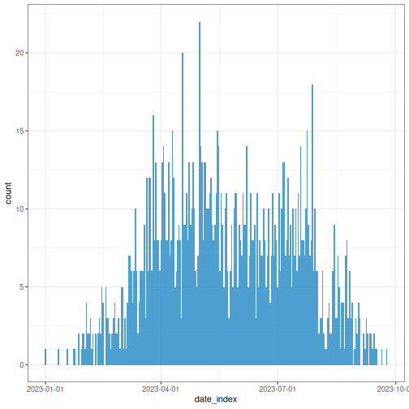
You can opt for the most appropriate aggregation time unit that describe the spread or transmission pattern.
R
# Plot weekly incidence data
plot(weekly_incidence)
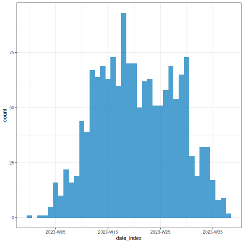
Plotting an <incidence2> object relies on the
ggplot2 package, so ggplot
layers can be added to the plot as shown below.
R
# Plot weekly incidence data
plot(weekly_incidence) +
ggplot2::labs(
x = "Time (in weeks)", # x-axis label
y = "Number of cases", # y-axis label
title = "Epidemic curve, simulated outbreak",
subtitle = "Weekly case incidence by date of onset"
)
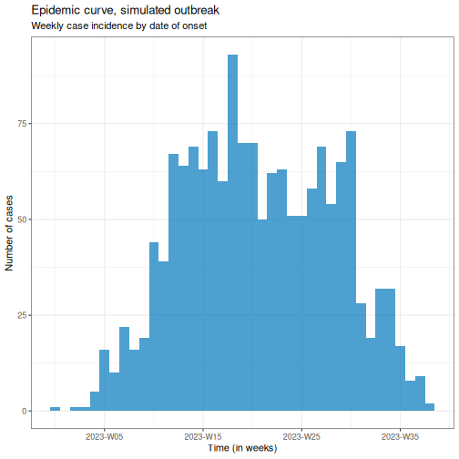
Also, provide an stratified plot by categories to compare transmission patterns across different demographic groups.
R
# Plot weekly incidence data
plot(weekly_group_incidence) +
ggplot2::labs(
x = "Time (in weeks)", # x-axis label
y = "weekly cases" # y-axis label
)
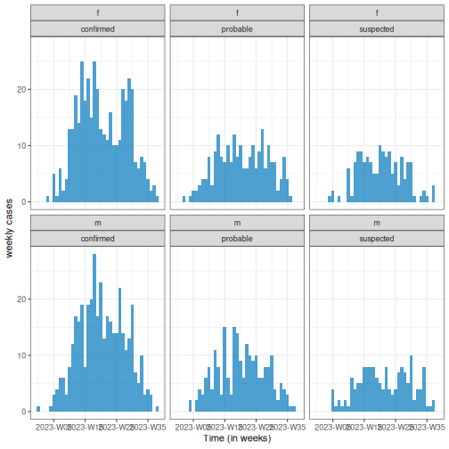
Easy aesthetics
Find out how you can use the arguments within the plot()
function to provide aesthetics to your <incidence2>
objects.
R
weekly_group_incidence %>%
plot(fill = "case_type")
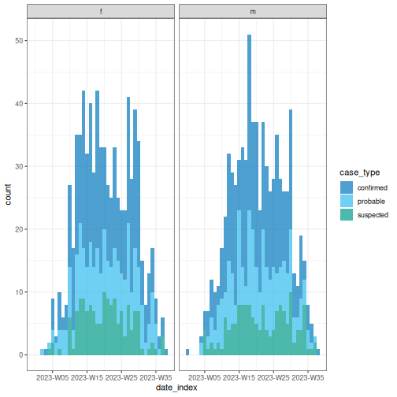
Some of them include show_cases = TRUE,
angle = 45, and n_breaks = 5. Try them and see
how they impact on the resulting plot.
R
weekly_group_incidence %>%
plot(fill = "sex", angle = 45)
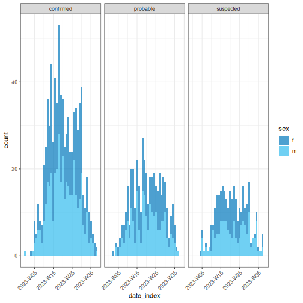
We invite you to take a look at the reference
manual of the funcion plot().
Challenge
Use the biweekly_incidence created in the previous
challenge to:
- Visualize the incidence curve.
- Identify what combination of arguments in
plot()work best.
Test if arguments like fill, nrow,
show_cases, angle, or n_breaks
improve the plot.
Find one more example in this how-to guide entry on Plot age-stratified incidence data by month from date of birth
What are common challenges when aggregating linelist to incidence?
-
Aggregate by one or more variables jointly:
- By date (e.g., date of report and date of death) for outbreak severity analysis.
- By groups (e.g., age, sex, or location) for stratified analyses of transmission or severity.
Get a complete time series to have the same range of dates for each grouping.
How to describe an epidemic curve?
We can describe epicurves by comparing the trend of new cases over time between demographic groups. Some features we can compare are:
- Size of peak or plateau,
- Time to peak (if any),
- Growth rate.
For example, in the figure below, we have two epidemic curves for the same outbreak stratified by sex. In the population, most cases were observed in females.
- The size of the peak in females was ~70 incident cases; in males this was ~22 incident cases.
- The peak in females occurred around epiweek 15; in males this was around epiweek 20.
- The growth rate in females may be higher than in males. In a same period of time (about 15 weeks), cases in females were more than 3 times the cases in males.
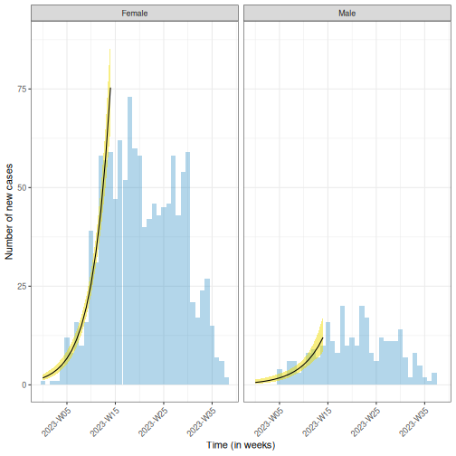
You can estimate the peak – the time with the highest number of
recorded cases – using incidence2::estimate_peak(). Also
you can convert the count of new or incident cases to cumulative using
incidence2::cumulate() if needed for your downstream
analysis. Find examples about them on the incidence2
vignette section about “Bootstrapping and estimating peaks”
Why we use epidemic curves?
Generally, to describe the size and time trend of outbreak, and differences between groups (e.g., demographics). It could provide evidence to give an answer to a question like: Should we consider targeted over mass interventions?
It also can help us to determine the pattern of spread (like point source, propagated source, or others), and investigate an outbreak based on disease parameters (like determine the exposure time based on the incubation period).
We recommend you read the section on “Analysing and epi curve”. It describes some patterns of spread we summarize here:
| Type | Description | Shape of Epidemic Curve | Example |
|---|---|---|---|
| Point Source | Single shared exposure over a brief period | Sharp rise → peak → sharp fall (reflects incubation period) | Food poisoning from a single meal |
| Continuous Source | Prolonged exposure to the same source | Gradual rise, no clear peak, extended duration | Contaminated water supply over several days |
| Propagated Source | Person-to-person transmission | Successive waves or multiple peaks | Measles, COVID-19 |
| Intermittent Source | Repeated but irregular exposure to the same source | Multiple peaks at irregular intervals and varying sizes | A restaurant periodically serving contaminated food |
You can also complete this Quick-Learn Lesson on “Using an Epi Curve to Determine Mode of Spread” to train on how to determine the outbreak’s likely mode of spread by analyzing an epidemic curve.
From an epicurve of incident cases by date on symptom onset, we can determine:
- The incubation period, if the exposure time is known; or
- The exposure time, if the incubation period is known.
The incubation period is defined as the average time from infection to first clinical symptoms (Figure 2 at On Kwok, et al.). This varies from individual to individual for the same disease.
For example, measles has an incubation period with a range of 7-20 days (minimum/maximum), and a median of 12.5 days.
OUTPUT
Using Lessler J, Reich N, Brookmeyer R, Perl T, Nelson K, Cummings D (2009).
"Incubation periods of acute respiratory viral infections: a systematic
review." _The Lancet Infectious Diseases_.
doi:10.1016/S1473-3099(09)70069-12
<https://doi.org/10.1016/S1473-3099%2809%2970069-12>..
To retrieve the citation use the 'get_citation' function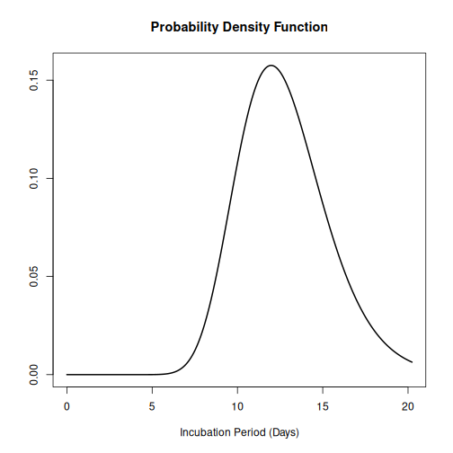
Knowing the incubation period of the pathogen allows us to estimate when exposure occurred by working backwards from symptom onset on the epidemic curve:
- The start of exposure can be estimated by subtracting the minimum incubation period from the date of the first case.
- The end of exposure can be estimated by subtracting the maximum incubation period from the date of the last case.
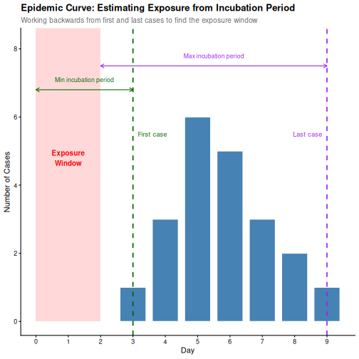
An outbreak can be described using:
- Incidence plots or epidemic curves from linelist (using incidence2)
- Contact networks from contact data (using epicontacts).
- Delays between dated events from linelist (using cleanepi or tidyverse)
In the next set of tutorials we will learn how to inform an outbreak assessment based on estimated parameters of transmission (growth rate and reproduction number), severity (case fatality risk) using more comprenhensive models and statistical distributions.
For a refresher on delays and probability distributions, you can review introductory concepts with some episodes introducing delays for outbreak data.
Challenge
Which combination of time unit, case categories, and arguments in
plot() best captures the outbreak pattern of
sim_data and why?
Write some sentences describing your learnings.
Lastly, incidence2 produces basic plots for epicurves, but additional work is required to create well-annotated graphs. However, using the ggplot2 package, you can generate more sophisticated epicurves, with more flexibility in annotation. Find alternatives about how to improve your epicurves in the spoiler below:
We will focus on three key elements for producing epicurves: histogram plots, scaling date axes and their labels, and general plot theme annotation. The example below demonstrates how to configure these three elements for a simple incidence2 object.
R
# Define date breaks for the x-axis
breaks <- seq.Date(
from = min(as.Date(daily_incidence$date_index, na.rm = TRUE)),
to = max(as.Date(daily_incidence$date_index, na.rm = TRUE)),
by = 20 # every 20 days
)
# Create the plot
ggplot2::ggplot(data = daily_incidence) +
geom_histogram(
mapping = aes(
x = as.Date(date_index),
y = count
),
stat = "identity",
color = "blue", # bar border color
fill = "lightblue", # bar fill color
width = 1 # bar width
) +
theme_minimal() + # apply a minimal theme for clean visuals
theme(
plot.title = element_text(face = "bold", hjust = 0.5), # title center + bold
plot.subtitle = element_text(hjust = 0.5), # center subtitle
plot.caption = element_text(face = "italic", hjust = 0), # italic caption
axis.title = element_text(face = "bold"), # bold axis titles
axis.text.x = element_text(angle = 45, vjust = 0.5) # rotated x-axis text
) +
labs(
x = "Date", # x-axis label
y = "Number of new cases", # y-axis label
title = "Daily Outbreak Cases", # plot title
subtitle = "Epidemiological Data for the Outbreak", # plot subtitle
caption = "Data Source: Simulated Data" # plot caption
) +
scale_x_date(
breaks = breaks, # set custom breaks on the x-axis
labels = scales::label_date_short() # shortened date labels
)
WARNING
Warning in geom_histogram(mapping = aes(x = as.Date(date_index), y = count), :
Ignoring unknown parameters: `binwidth` and `bins`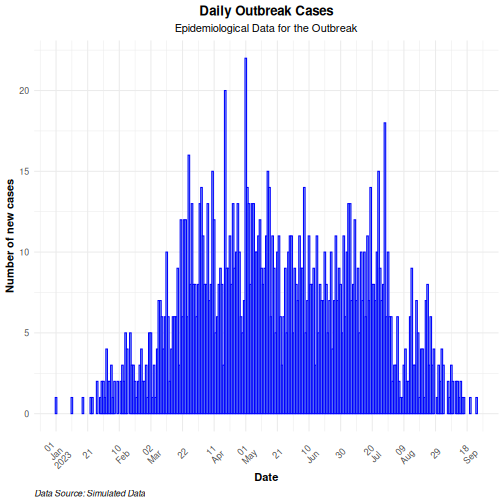
Use the group option in the mapping function to
visualize an epicurve with different groups. If there is more than one
grouping factor, use the facet_wrap() option, as
demonstrated in the example below:
R
# Create a daily incidence object grouped by sex
daily_incidence_2 <- incidence2::incidence(
sim_data,
date_index = "date_onset",
groups = "sex",
interval = "day", # Aggregate by daily intervals
complete_dates = TRUE # Complete missing dates
)
R
# Plot daily incidence faceted by sex
ggplot2::ggplot(data = daily_incidence_2) +
geom_histogram(
mapping = aes(
x = as.Date(date_index),
y = count,
group = sex,
fill = sex
),
stat = "identity"
) +
theme_minimal() + # apply minimal theme
theme(
plot.title = element_text(face = "bold", hjust = 0.5), # title bold + center
plot.subtitle = element_text(hjust = 0.5), # center the subtitle
plot.caption = element_text(face = "italic", hjust = 0), # italic caption
axis.title = element_text(face = "bold"), # bold axis labels
axis.text.x = element_text(angle = 45, vjust = 0.5) # rotate x-axis text
) +
labs(
x = "Date", # x-axis label
y = "Number of cases", # y-axis label
title = "Daily Outbreak Cases by Sex", # plot title
subtitle = "Incidence of Cases Grouped by Sex", # plot subtitle
caption = "Data Source: Simulated Data" # caption for additional context
) +
facet_wrap(~sex) + # create separate panels by sex
scale_x_date(
breaks = breaks, # set custom date breaks
labels = scales::label_date_short() # short date format for x-axis labels
) +
scale_fill_manual(values = c("lightblue", "lightpink")) # custom fill colors
WARNING
Warning in geom_histogram(mapping = aes(x = as.Date(date_index), y = count, :
Ignoring unknown parameters: `binwidth` and `bins`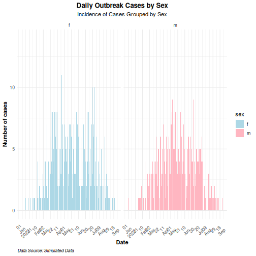
- Use the simulist package to generate synthetic outbreak data
- Use the incidence2 package to aggregate case data based on a date event, and other variables to produce epidemic curves.
- Use the ggplot2 package to produce better annotated epicurves.